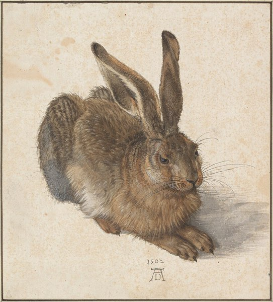
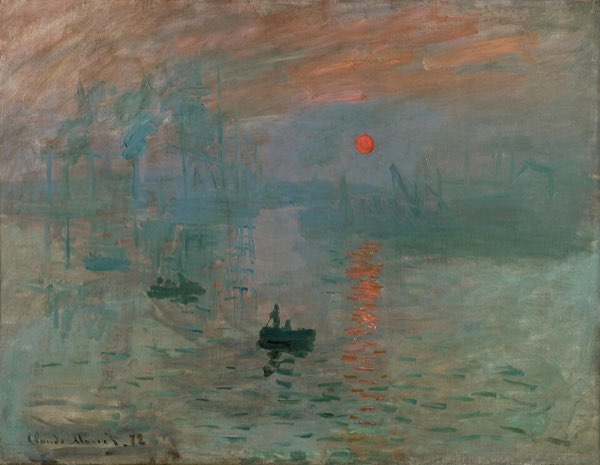
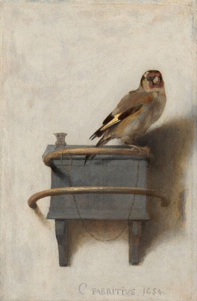
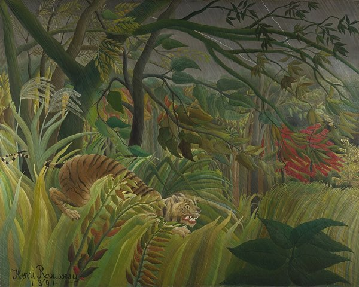

Animals, Flowers and Light
Five famous old paintings and one frame waiting for you. Our paintings are copies: each label tells you where the real one hangs. Look slowly, like a snail.

Albrecht Dürer
Young Hare, 1502
Watercolour and gouache (a thick kind of watercolour) on paper. Find his letters A and D under the hare: that is how he signed his work.
The real one: Albertina, Vienna

Claude Monet
Impression, Sunrise, 1872
Oil paint on canvas. This painting gave a whole art style its name: Impressionism.
The real one: Musée Marmottan Monet, Paris

Carel Fabritius
The Goldfinch, 1654
Oil paint on wood. The real one is small, only 34 cm tall. Can you see the tiny chain?
The real one: Mauritshuis, The Hague

Vincent van Gogh
Sunflowers, 1888
Oil paint on canvas. He painted it to brighten up a friend's room, and wrote his name on the vase.
The real one: National Gallery, London

Henri Rousseau
Surprised!, 1891
Oil paint on canvas. Rousseau never saw a jungle. He studied the plants in a big glasshouse in Paris.
The real one: National Gallery, London
You!
My Sunny Day, today
CSS on a screen. Change the colours in style.css and this painting is yours.
The real one: right here